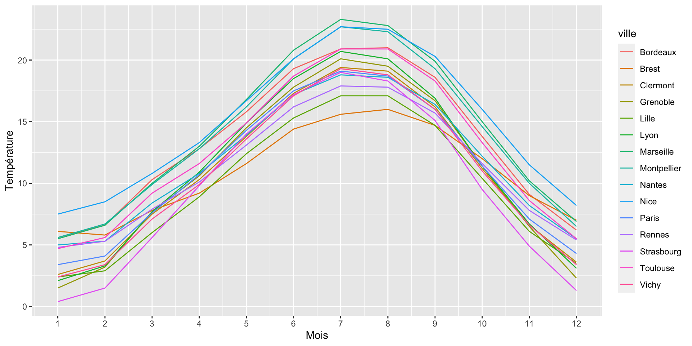
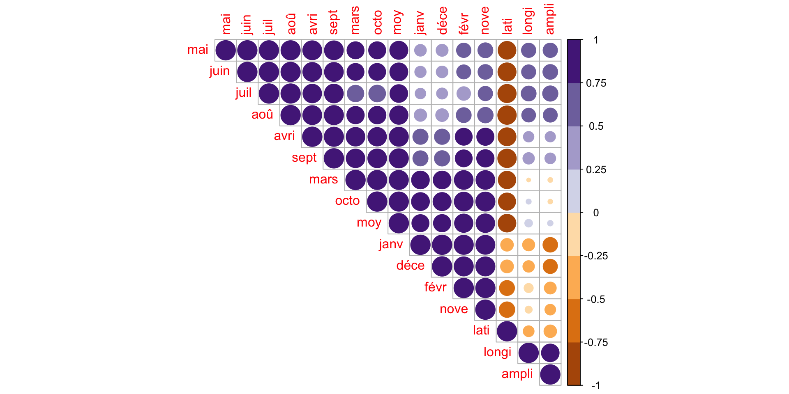
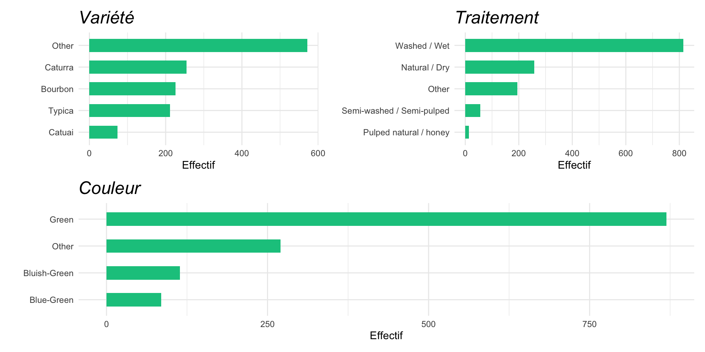
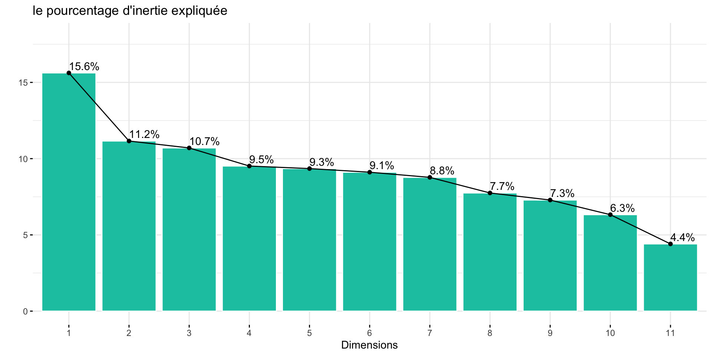
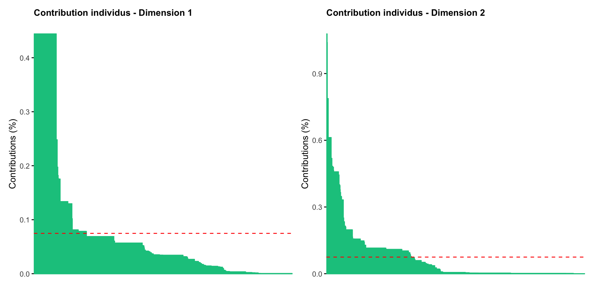
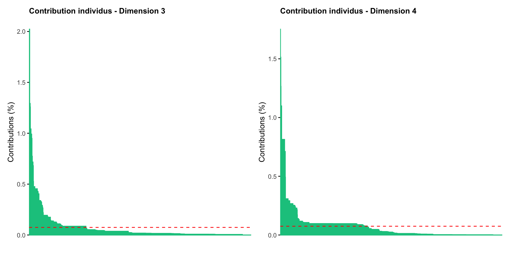
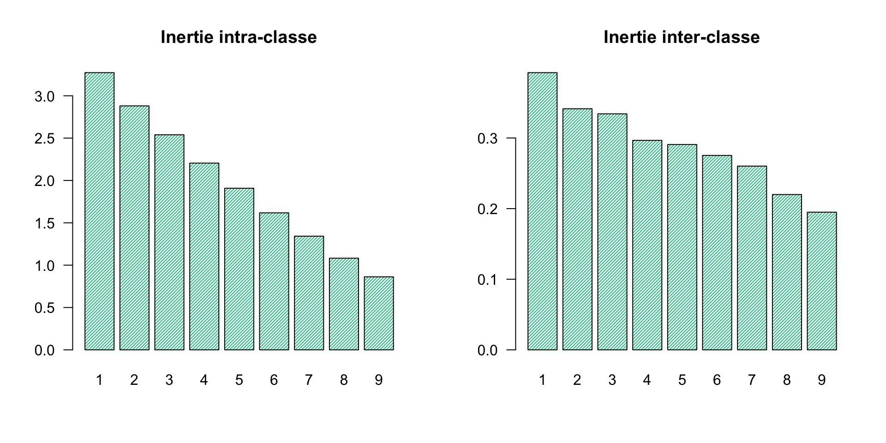
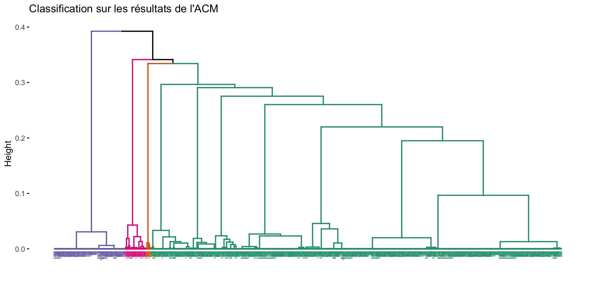

Etude de la température avec une Analyse en composantes principales et une ètude de la qualité du café Robusta et Arabica avec une analyse en composantex multiples et un découpage en groupe a l’aide de la classification
Importation de la base de donnée
Courbe de densité
Matrice de corrélation
Etude des inerties

- Changement abrupt de pente à partir du troisiéme axe donc On conserve donc 3 composantes principales. :::
Etude des variables
Etude des individus
PARTIE II : ACM sur la qualité du café
df_1 <- read.csv("~/Desktop/S7 R/data R/arabica_data_cleaned.csv", sep = ",",row.names = 1)
df_2 <- read.csv("~/Desktop/S7 R/data R/robusta_data_cleaned.csv", sep = ",",row.names = 1)
colnames(df_2) <- colnames(df_1)
new1data <- rbind(df_1,df_2)
class_df <- cbind(Variables = colnames(new1data),
Type = unlist(unname(lapply(new1data, class))))Warning
les problèmes rencontrés :
Noms de colonnes différents dans les deux jeux de données
Nombre d’individus beaucoup plus important dans le premier dataframe
Pas de données manquantes à priori
Quelles variables sélectionner ? (Aide avec
class_df)
tableau des variables selectionées pour L’ACM
graphique des modalités
Etude des inerties
- L’axe \(F_1\) explique 15.62 % de l’inertie totale
- Les axes factoriels \(F_i\) avec (\(i = 1,\dots,4\)) expliquent 47 % de l’inertie totale
Etude des variables (Dim 1 & 2)
Etude des variables (Dim 3 & 4)
Etude des individus (Dim 1 & 2)

Interprétation :
- Il faut 113 individus pour arriver à 50 % de contribution sur l’axe \(F_1\).
- Il faut 110 individus pour arriver à 50 % de contribution sur l’axe \(F_2\).
- Les axes \(F_1\) et \(F_2\) sont donc des axes globaux puisqu’un nombre important d’individus contribuent à la construction de ceux-ci.
Etude des individus (Dim 3 & 4)

Interprétation :
- Il faut 77 individus pour arriver à 50 % de contribution sur l’axe \(F_3\).
- Il faut 108 individus pour arriver à 50 % de contribution sur l’axe \(F_4\).
- L’axe \(F_3\) est donc un axe expliquant mieux les individus prenant des
modalités rarestandis que l’axe \(F_4\) reste un axe plutôt global.
PARTIE III : CLASSIFICATION
Mesure et choix des classes
- On aperçoit des sauts dans les gains d’inertie assez considérables à 2 et 4 classes.
CAH
- On obtient 4 clusters de taille \(n =\) 1040, 14, 56 et 228.